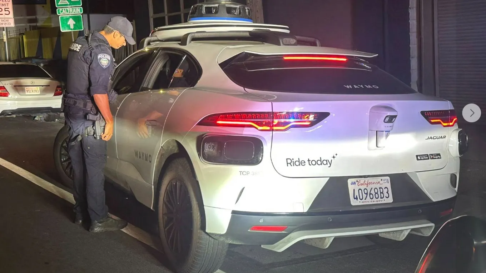

When a Waymo breaks a law written for humans
Originally posted on LinkedIn, October 21, 2025.
A police officer pulled over a white Waymo after it made an illegal U-turn on a side road in California. He switched on his blue lights, stopped behind it, walked up to the window, and found no driver. Just cameras, sensors, a quietly humming computer, and a small Waymo sticker on the door.
This happened in October 2025. The car had committed a clear traffic violation, but it had no ID, no license, and nobody who could receive the ticket. The law was not ready for this moment because traffic laws were written for humans.
According to the San Bruno Police Department, officers saw the autonomous Waymo make the turn “right in front” of them while they were stopped at a traffic light. “Since there was no human driver, a citation could not be issued,” the department said, adding that officers cannot write a ticket to a “robot.” The department joked that the vehicle was “driverless, handless, and clueless,” and described the encounter as having a “plot twist.”
The Waymo stopped immediately when the officers activated their flashing lights and siren. They later spoke with a Waymo representative through equipment installed inside the vehicle. Police said they hoped “reprogramming” would prevent it from committing more violations.
Legislation was already being prepared that would let officers issue notices directly to the companies operating autonomous vehicles. Until then, they had no way to punish the robot.
I don't see this as just an amusing technology story. It exposes a real gap in how we define responsibility. Who is at fault when a machine makes a mistake: the company that developed the algorithm, the virtual driver, or the state that approved the trial?
This was not Waymo's only unusual incident. Earlier in 2025, one of its vehicles began driving in circles. In 2024, Waymo had to fix an entire fleet after residents complained that the cars kept honking nonstop.
These are the growing pains of a world being rebuilt in front of us. Maybe this is the price we have to pay for technology that is safer, more comfortable, and still feels futuristic.
As Douglas Adams, author of The Hitchhiker's Guide to the Galaxy, once said:
Technology is a word that describes something that doesn't work yet
